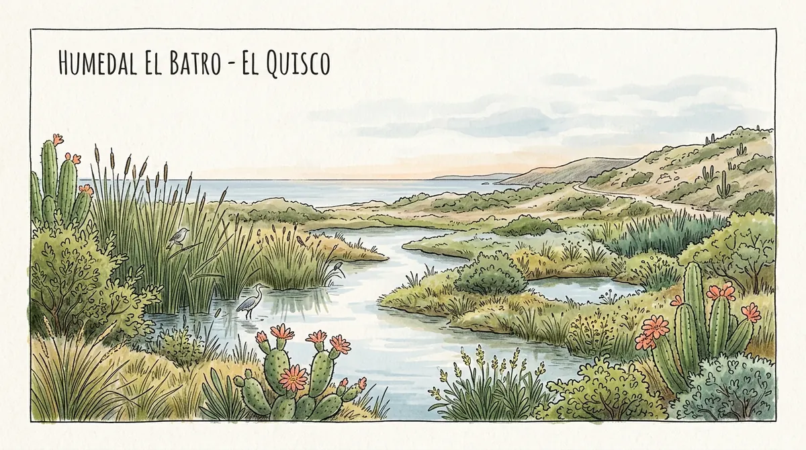

Humedal y bosque nativo
Humedal El Batro
Un humedal urbano protegido, a pasos de la costa.

El lugar
El Humedal Urbano El Batro fue reconocido por el Ministerio del Medio Ambiente el 29 de septiembre de 2025, a solicitud de la Municipalidad de El Quisco.
Es un lugar para recorrer en silencio y con cuidado: aquí la naturaleza tiene nombre y también reglas.
Fuente: Res. Ex. 6.648 del Ministerio del Medio Ambiente, 29/09/2025 (BCN, Ley Chile).
Antes de ir
- Revisa el pronóstico y lleva agua.
- Sigue los senderos y lleva tu basura de vuelta.
- Observa la flora y la fauna sin intervenirlas.